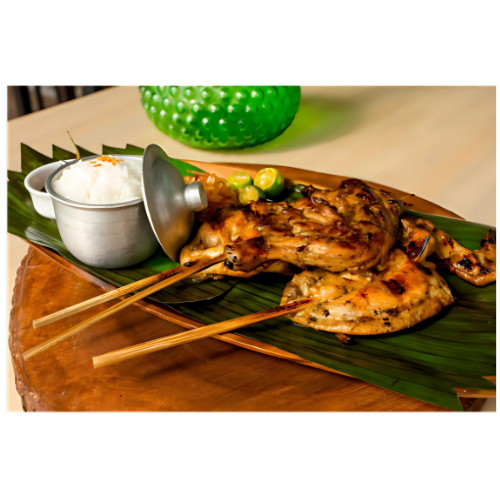

Chicken Inasal
Chicken Inasal is a renowned Filipino dish hailing from the vibrant region of Bacolod in Negros Occidental. This flavorful grilled chicken showcases a perfect blend of savory and slightly sweet marinades, creating a mouthwatering experience for the senses. The chicken is marinated in a mixture of vinegar, calamansi juice (a local citrus fruit), garlic, ginger, and lemongrass, infusing the meat with aromatic flavors and tenderizing it beautifully.
Once marinated, the chicken is traditionally grilled over hot charcoal, giving it a distinct smoky char that enhances its natural flavors. The skin crisps up beautifully, while the meat remains juicy and succulent. Often served with a side of garlic rice and a dipping sauce made from vinegar and soy sauce, Chicken Inasal is not just a meal; it’s a celebration of Filipino culinary heritage. Each bite is a harmonious balance of tangy, sweet, and savory notes, making it a beloved dish among locals and visitors alike. Its vibrant presentation and tantalizing aroma make Chicken Inasal a must-try for anyone seeking to explore the rich flavors of Philippine cuisine.
Origin
Chicken Inasal has its origins in the Philippines, specifically from the region of Bacolod in Negros Occidental. This dish reflects the rich culinary heritage of the Visayas, where local ingredients and cooking techniques come together to create a flavorful experience. The word "inasal" comes from the Filipino term for "grilled," and the dish showcases the importance of grilling in Filipino cuisine.
The history of Chicken Inasal is closely tied to the sugarcane industry in Negros, as many sugar plantation workers (or "sugarcane laborers") would prepare grilled chicken as a hearty meal after a long day’s work. The marinade, typically made with vinegar, calamansi juice, garlic, ginger, and lemongrass, was developed as a way to tenderize and flavor the chicken, utilizing local ingredients readily available in the area.
As Chicken Inasal gained popularity, it evolved into a celebrated dish across the Philippines. Today, it is often served in restaurants and food stalls, showcasing its distinct flavor profile and cooking style. The dish is not only a testament to Bacolod’s culinary heritage but also a symbol of Filipino hospitality and tradition, often enjoyed at gatherings and celebrations, further solidifying its place in the nation’s food culture.
Ingredients
For chicken Marinade:
- 1 kg (about 2.2 lbs) chicken pieces (legs and thighs work best)
- 1/2 cup vinegar (cane vinegar or white vinegar)
- 1/4 cup calamansi juice (or lime juice as a substitute)
- 1/4 cup soy sauce
- 1 tsp salt
- 1/4 cup garlic, minced (about 6-8 cloves)
- 1 tbsp ginger, minced
- 1 stalk lemongrass, finely chopped (optional)
- 1 tsp black pepper
- 1 tsp sugar (optional, for a hint of sweetness)
- Salt to taste
For Basting:
- 1/2 cup annatto oil (or regular vegetable oil with a little annatto powder for color)
- 2 tbsp vinegar
How to Cook
- In a large bowl, combine the vinegar, calamansi juice, soy sauce, minced garlic, minced ginger, chopped lemongrass, black pepper, sugar, and salt. Mix well.
- Add the chicken pieces to the marinade, ensuring they are well-coated. Cover and refrigerate for at least 3 hours, preferably overnight for better flavor.
- In a small saucepan, heat the annatto oil over low heat. If you are using annatto powder, add it to the oil and let it simmer for about 5 minutes until the oil takes on a vibrant orange color. Strain out the annatto seeds or powder and set aside.
- Mix the annatto oil with 2 tablespoons of vinegar for basting.
- Preheat your grill or grill pan to medium-high heat.
- Remove the chicken from the marinade and shake off excess liquid.
- Grill the chicken for about 5-7 minutes on each side, basting with the annatto oil mixture occasionally to keep the meat moist and enhance the color.
- Cook until the chicken is cooked through and has a nice char, with an internal temperature of 165°F (75°C).
- Once cooked, remove the chicken from the grill and let it rest for a few minutes.
- Serve hot with steamed rice, a side of vinegar for dipping, and enjoy!